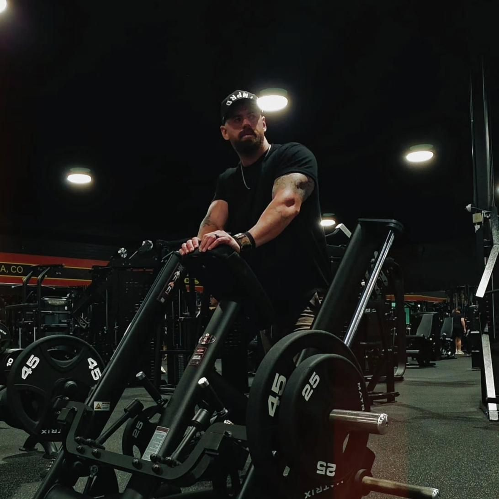
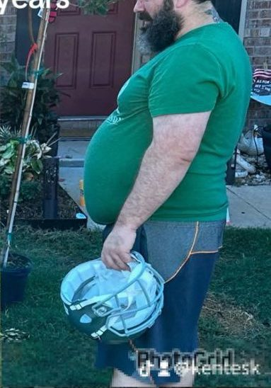
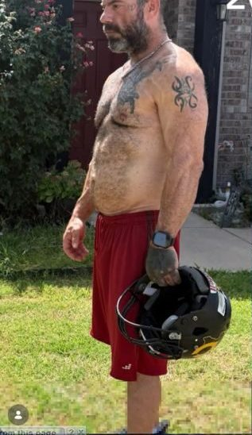
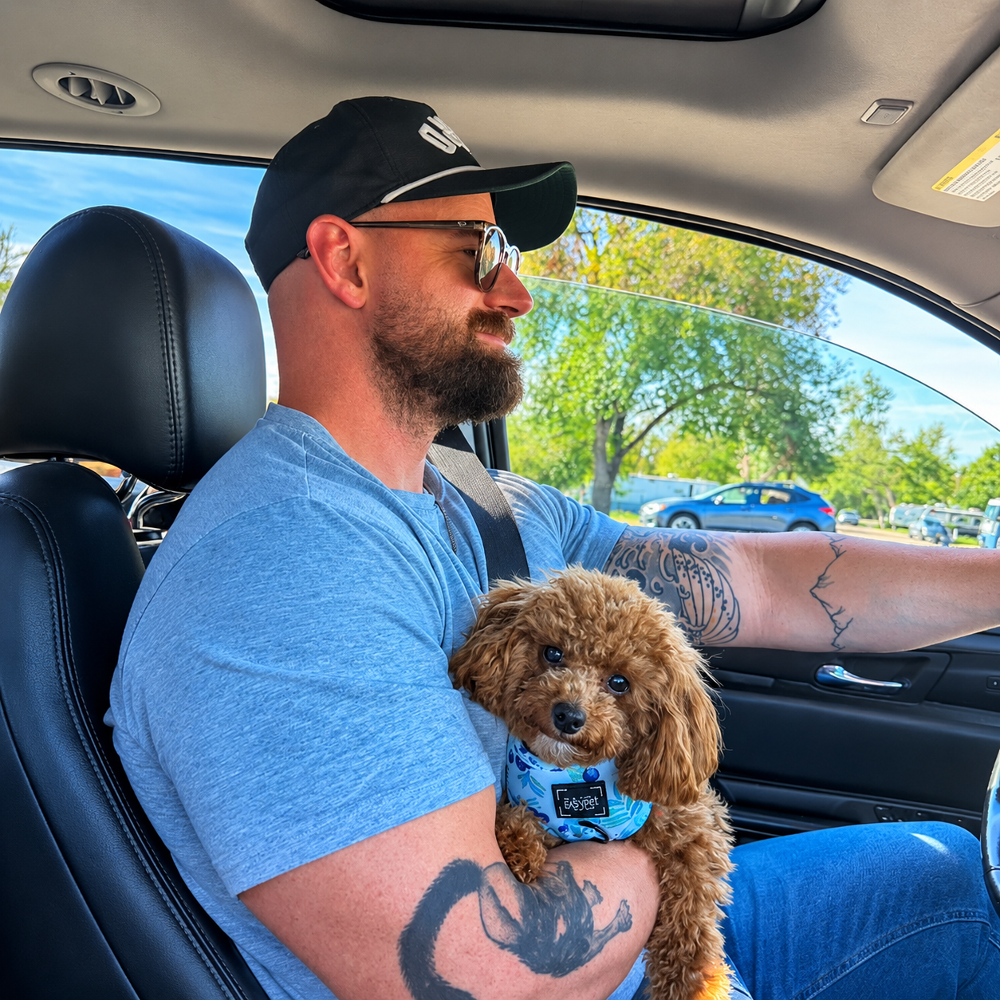
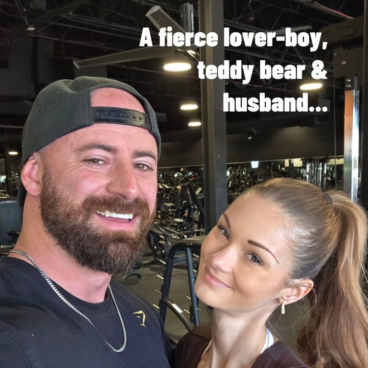
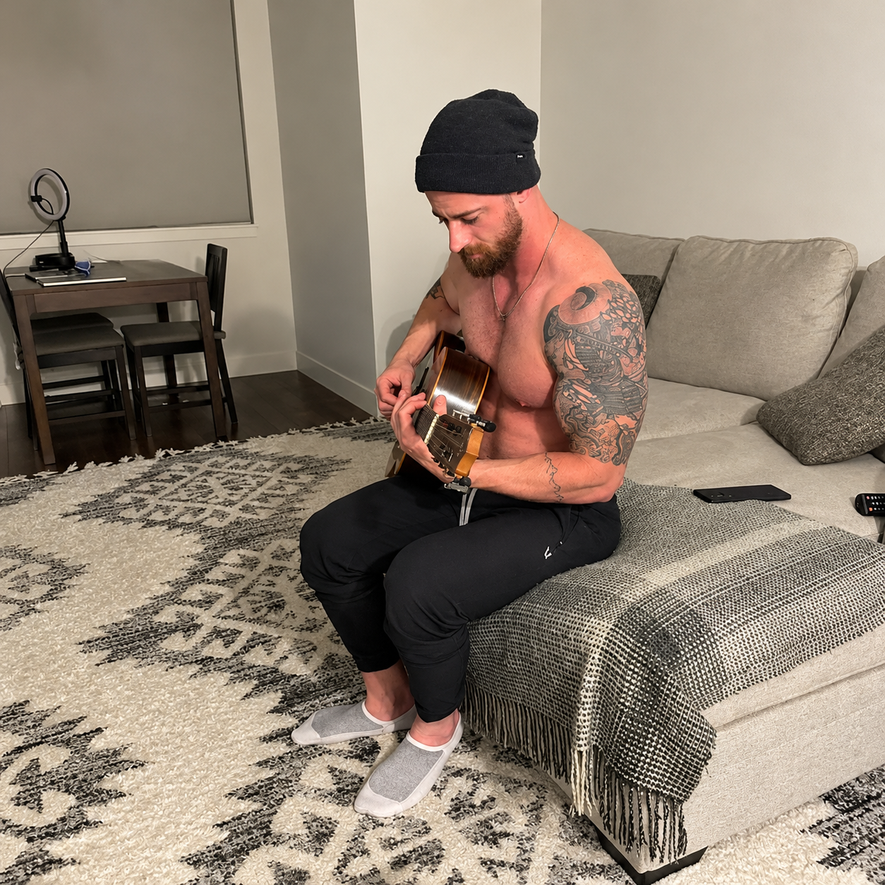

You eat less and less, and the scale stays put.
Every few weeks you trim a little more. Now you're hungry, flat and irritable, and your body has stopped giving you anything back.
1:1 Online Coaching · Fat Loss & Physique
You're putting in the work and the scale still won't move.
That's almost never about effort.
I'm Alex, and I help you find out where your body actually stands, then build a plan around your real life.
20 minutes. Free. No pressure, no pitch.

Real foodHeavy liftingHonest numbersWeekly check-insMost people who message me aren't lazy. They're tired, confused, and doing everything the internet told them to.
Every few weeks you trim a little more. Now you're hungry, flat and irritable, and your body has stopped giving you anything back.
A hard cut works for a while. Then life happens, the rebound hits, and you land right where you started, or a bit past it.
Almost nobody knows their real number. It's not laziness. Nobody ever showed you how to look at it honestly.
One number, one morning, and the day is ruined. Meanwhile your clothes fit better, you're stronger and you're sleeping well. The scale never sees that.
Here's the good news: this is fixable.
It sounds backwards until you see the loop. Muscle is the engine, and an engine needs fuel.
Not a guess and not a template. We track one honest week, exactly as you eat it, and read what it tells us.
If you've been under-eating for months, cutting harder is the wrong move. We rebuild your intake first, slowly, then cut from a stronger place.
Photos, measurements, how your clothes fit, your energy, sleep, mood and the weight on the bar.
Starving yourself breaks this loop at step one. I'd rather help you run it.
Women who wanted to feel comfortable in their skin again. Men who wanted to level up at home and at work. Different goals, same approach.
Results vary. Every body, schedule and starting point is different.


“Started at 281 and today as of this morning I’m 254.8 and we ARE NOT DONE. This is what a coach gets you with consistent feedback, evaluation and psychological investment in unpacking all the bad habits. @iamalex_tmprd.fit did exactly that and still is coach.”Ryan · Coaching client


“Thank you for being one of the best coaches for getting your health back on track and understanding how to do a real cut healthily.”@az3w0ra1 · 2-year journey

To temper metal is to refine it. You put it through pressure, heat and stress, then bring it out of the fire and harden it. My life has done exactly that over the last 5–6 years.
I've always done the safe thing. A safe marriage that wasn't the right one. Bodybuilding, which kept me small in other places. I hid behind supplements, excuses and security, because nobody wants to be held over the fire.
But life finds a way to do it anyway. I made my physique the best it could be while the rest of my life fell into a burning heap. So I built something from what was left.
You can be destroyed by the fire, or you can make something from it.
I'm unapologetically passionate about helping people reach their fitness goals, and about using fitness to level up everything else. Outside the gym, I'm a few other things too:



I coach about 40 people right now, and I've worked with well over a hundred. I'm not here to make you dependent on me. I'm here to teach you how to run your own body.
Women who just want to feel good in their body again.
Men who want more at work and at home, and aren't sure how.
Army men and women aiming to improve their ACFT score.
People taking time off stage to heal hormones and health.
20 minutes. We talk about where you are and what you've tried.
You track one honest week. No cleaning it up, no being good.
Calories, protein and training that fit your life, not a template.
We adjust as your body responds, until you can do it yourself.
Free · About a minute
Enter your stats and your usual day of eating. I'll show you your true maintenance calories and whether your body needs to eat more or less.
Check my metabolism →Videos & posts
Short videos on food, lifting and tracking progress without leaning on the scale.
Watch on Instagram →Your next move
Book a free 20-minute call. We'll talk about where you are, what you've tried and what I'd do first. If I'm not the right fit, I'll tell you.
20 minutes · Free · Zero obligation